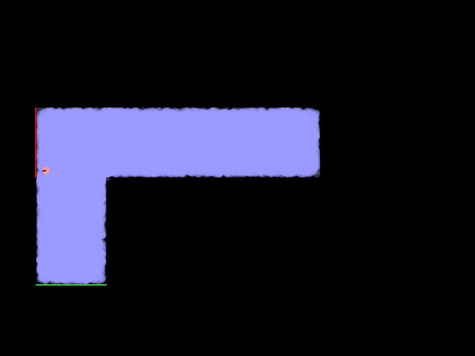
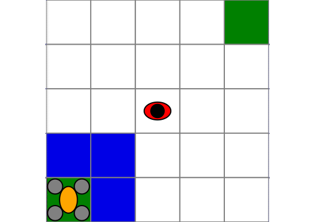
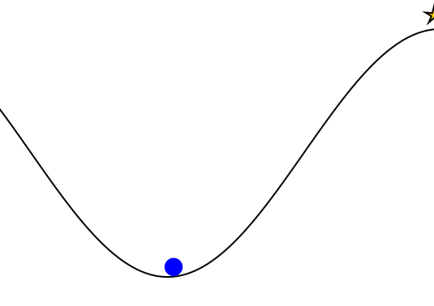
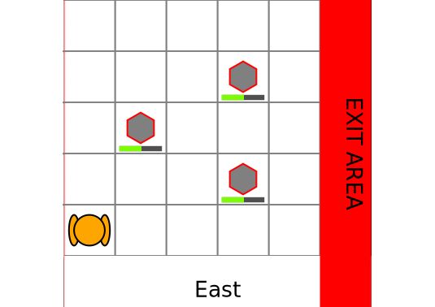
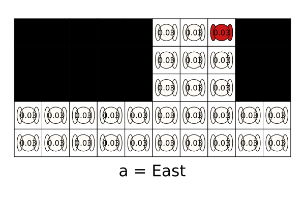

Gallery of POMDPs.jl Problems
A gallery of models written for POMDPs.jl with visualizations. To view these visualizations on your own machine, the code is provided below each visualization.
EscapeRoomba
Originally, an optional final project for AA228 at Stanford in Fall 2018. A Roomba equipped with a LIDAR or a bump sensor needs to try to find the safe exit (green) without accidentally falling down the stairs (red).

using POMDPs
using POMDPTools
using POMDPGifs
using BasicPOMCP
using Random
using ParticleFilters
using Cairo
using LinearAlgebra
# If you don't have RoombaPOMDPs installed, uncomment the following two lines
# using Pkg
# Pkg.add(url="https://github.com/sisl/RoombaPOMDPs.git")
using RoombaPOMDPs
# Let's only consider discrete actions
roomba_actions = [RoombaAct(2.0, 0.0), RoombaAct(2.0, 0.7), RoombaAct(2.0, -0.7)]
pomdp = RoombaPOMDP(;
sensor=Bumper(),
mdp=RoombaMDP(;
config=2,
discount=0.99,
contact_pen=-0.1,
aspace=roomba_actions
)
)
# Define the belief updater
num_particles = 20000
v_noise_coefficient = 0.0
om_noise_coefficient = 0.4
resampler=LowVarianceResampler(num_particles)
rng = MersenneTwister(1)
belief_updater = RoombaParticleFilter(
pomdp, num_particles, v_noise_coefficient,
om_noise_coefficient,resampler, rng
)
# Custom update function for the particle filter
function POMDPs.update(up::RoombaParticleFilter, b::ParticleCollection, a, o)
pm = up._particle_memory
wm = up._weight_memory
ps = []
empty!(pm)
empty!(wm)
all_terminal = true
for s in particles(b)
if !isterminal(up.model, s)
all_terminal = false
a_pert = RoombaAct(a.v + (up.v_noise_coeff * (rand(up.rng) - 0.5)), a.omega + (up.om_noise_coeff * (rand(up.rng) - 0.5)))
sp = @gen(:sp)(up.model, s, a_pert, up.rng)
weight_sp = pdf(observation(up.model, sp), o)
if weight_sp > 0.0
push!(ps, s)
push!(pm, sp)
push!(wm, weight_sp)
end
end
end
while length(pm) < up.n_init
a_pert = RoombaAct(a.v + (up.v_noise_coeff * (rand(up.rng) - 0.5)), a.omega + (up.om_noise_coeff * (rand(up.rng) - 0.5)))
s = isempty(ps) ? rand(up.rng, b) : rand(up.rng, ps)
sp = @gen(:sp)(up.model, s, a_pert, up.rng)
weight_sp = obs_weight(up.model, s, a_pert, sp, o)
if weight_sp > 0.0
push!(pm, sp)
push!(wm, weight_sp)
end
end
# if all particles are terminal, issue an error
if all_terminal
error("Particle filter update error: all states in the particle collection were terminal.")
end
# return ParticleFilters.ParticleCollection(deepcopy(pm))
return ParticleFilters.resample(up.resampler,
WeightedParticleBelief(pm, wm, sum(wm), nothing),
up.rng)
end
solver = POMCPSolver(;
tree_queries=20000,
max_depth=150,
c = 10.0,
rng=MersenneTwister(1)
)
planner = solve(solver, pomdp)
sim = GifSimulator(;
filename="examples/EscapeRoomba.gif",
max_steps=100,
rng=MersenneTwister(3),
show_progress=false,
fps=5)
saved_gif = simulate(sim, pomdp, planner, belief_updater)
println("gif saved to: $(saved_gif.filename)")gif saved to: examples/EscapeRoomba.gifDroneSurveillance
Drone surveillance POMDP from M. Svoreňová, M. Chmelík, K. Leahy, H. F. Eniser, K. Chatterjee, I. Černá, C. Belta, "Temporal logic motion planning using POMDPs with parity objectives: case study paper", International Conference on Hybrid Systems: Computation and Control (HSCC), 2015.
In this problem, the UAV must go from one corner to the other while avoiding a ground agent. It can only detect the ground agent within its field of view (in blue).

using POMDPs
using POMDPTools
using POMDPGifs
using NativeSARSOP
using Random
using DroneSurveillance
import Cairo, Fontconfig
pomdp = DroneSurveillancePOMDP()
solver = SARSOPSolver(; precision=0.1, max_time=10.0)
policy = solve(solver, pomdp)
sim = GifSimulator(; filename="examples/DroneSurveillance.gif", max_steps=30, rng=MersenneTwister(1), show_progress=false)
saved_gif = simulate(sim, pomdp, policy)
println("gif saved to: $(saved_gif.filename)")gif saved to: examples/DroneSurveillance.gifQuickMountainCar
An implementation of the classic Mountain Car RL problem using the QuickPOMDPs interface.

using POMDPs
using POMDPTools
using POMDPGifs
using Random
using QuickPOMDPs
using Compose
import Cairo
mountaincar = QuickMDP(
function (s, a, rng)
x, v = s
vp = clamp(v + a*0.001 + cos(3*x)*-0.0025, -0.07, 0.07)
xp = x + vp
if xp > 0.5
r = 100.0
else
r = -1.0
end
return (sp=(xp, vp), r=r)
end,
actions = [-1., 0., 1.],
initialstate = Deterministic((-0.5, 0.0)),
discount = 0.95,
isterminal = s -> s[1] > 0.5,
render = function (step)
cx = step.s[1]
cy = 0.45*sin(3*cx)+0.5
car = (context(), Compose.circle(cx, cy+0.035, 0.035), fill("blue"))
track = (context(), line([(x, 0.45*sin(3*x)+0.5) for x in -1.2:0.01:0.6]), Compose.stroke("black"))
goal = (context(), star(0.5, 1.0, -0.035, 5), fill("gold"), Compose.stroke("black"))
bg = (context(), Compose.rectangle(), fill("white"))
ctx = context(0.7, 0.05, 0.6, 0.9, mirror=Mirror(0, 0, 0.5))
return compose(context(), (ctx, car, track, goal), bg)
end
)
energize = FunctionPolicy(s->s[2] < 0.0 ? -1.0 : 1.0)
sim = GifSimulator(; filename="examples/QuickMountainCar.gif", max_steps=200, fps=20, rng=MersenneTwister(1), show_progress=false)
saved_gif = simulate(sim, mountaincar, energize)
println("gif saved to: $(saved_gif.filename)")gif saved to: examples/QuickMountainCar.gifRockSample
The RockSample problem from T. Smith, R. Simmons, "Heuristic Search Value Iteration for POMDPs", Association for Uncertainty in Artificial Intelligence (UAI), 2004.
The robot must navigate and sample good rocks (green) and then arrive at an exit area. The robot can only sense the rocks with an imperfect sensor that has performance that depends on the distance to the rock.

using POMDPs
using POMDPTools
using POMDPGifs
using NativeSARSOP
using Random
using RockSample
using Cairo
pomdp = RockSamplePOMDP(rocks_positions=[(2,3), (4,4), (4,2)],
sensor_efficiency=20.0,
discount_factor=0.95,
good_rock_reward = 20.0)
solver = SARSOPSolver(precision=1e-3; max_time=10.0)
policy = solve(solver, pomdp)
sim = GifSimulator(; filename="examples/RockSample.gif", max_steps=30, rng=MersenneTwister(1), show_progress=false)
saved_gif = simulate(sim, pomdp, policy)
println("gif saved to: $(saved_gif.filename)")gif saved to: examples/RockSample.gifTagPOMDPProblem
The Tag problem from J. Pineau, G. Gordon, and S. Thrun, "Point-based value iteration: An anytime algorithm for POMDPs", International Joint Conference on Artificial Intelligence (IJCAI), 2003.
The orange agent is the pursuer and the red agent is the evader. The pursuer must "tag" the evader by being in the same grid cell as the evader. However, the pursuer can only see the evader if it is in the same grid cell as the evader. The evader moves stochastically "away" from the pursuer.

using POMDPs
using POMDPTools
using POMDPGifs
using NativeSARSOP
using Random
using TagPOMDPProblem
pomdp = TagPOMDP()
solver = SARSOPSolver(; max_time=20.0)
policy = solve(solver, pomdp)
sim = GifSimulator(; filename="examples/TagPOMDP.gif", max_steps=50, rng=MersenneTwister(1), show_progress=false)
saved_gif = simulate(sim, pomdp, policy)
println("gif saved to: $(saved_gif.filename)")gif saved to: examples/TagPOMDP.gifAdding New Gallery Examples
To add new examples, please submit a pull request to the POMDPs.jl repository with changes made to the gallery.md file in docs/src/. Please include the creation of a gif in the code snippet. The gif should be generated during the creation of the documentation using @eval and saved in the docs/src/examples/ directory. The gif should be named problem_name.gif where problem_name is the name of the problem. The gif can then be included using .